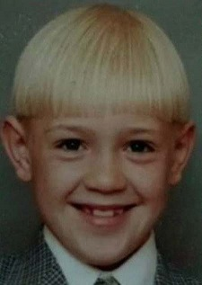
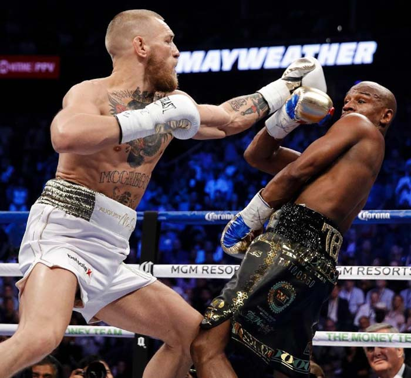

Конор Энтони МакГрегор (Conor Anthony McGregor). Родился 14 июля 1988 года в Дублине (Ирландия). Ирландский боец смешанных боевых искусств. Выступает под эгидой «UFC» в легкой и полулёгкой весовых категориях. Действующий чемпион UFC в лёгком весе и бывший чемпион в полулёгком весе. Занимает восьмую строчку официального рейтинга UFC среди лучших бойцов независимо от весовой категории (pound-for-pound). Рейтинг Sherdog ставит МакГрегора на первое место в полулёгком весе и на восьмое в списке лучших бойцов вне зависимости от весовой категории. Считается одним из лучших в MMA мастеров самопиара, умеющим привлекать к себе внимание и, соответственно, накручивать свои гонорары. 20 апреля 2016 года сообщил в своем Твиттере, что намерен завершить карьеру бойца MMA . Однако через день опроверг свое сообщение об уходе, пояснив, что он таким образом проводил пиар-акцию.
Рост Конора МакГрегора: 175 сантиметров.
Размах рук Конора МакГрегора: 188 сантиметров.
Прозвище Конора МакГрегора: The Notorious (Печально известный).
Конор МакГрегор родился 14 июля 1988 года в Дублине. Вырос в южной части Дублина - в пригороде Крамлин. Там он впервые заинтересовался спортом, правда, сначала увлекался футболом. Он играл за футбольный клуб «Лудерс Селтик» и болел за клуб английской премьер-лиги «Манчестер Юнайтед».
Конор МакГрегор в детстве (12 лет)

В 2006 году вместе с семьёй перехеал в Лукан, где пошел в среднюю школу «Colaiste Cois Life». После окончания школы начал обучаться профессии водопроводчика.Позже в Лукане он начал обучаться борьбе с будущим бойцом UFC Томом Иганом. Так Конор заинтересовался смешанными единоборствами. В 16 лет попал в команду SBG.
Позже в Лукане он начал обучаться борьбе с будущим бойцом UFC Томом Иганом. Так Конор заинтересовался смешанными единоборствами. В 16 лет попал в команду SBG.По словам бойца, большую роль в его жизни, а равно и в карьере, сыграла мама.
"Мама сыграла важную роль в моей карьере. Когда наступило тяжелое время, и я не знал, что делать, чем заниматься, думал об уходе из спорта, она поговорила с моим тренером, он пришел к нам домой и убедил меня продолжить тренироваться. Поэтому я каждый день вспоминаю ее с благодарностью", - говорил он.
К слову, мама довольно часто присутствует на его боях и ее часто можно было увидеть, обнимающей сына после очередной победы.
Конор МакГрегор с мамой

Свою профессиональную карьеру в смешанных единоборствах начал с выступлений в лёгком весе. Позже, заработав в карьерной статистике десять побед с двумя поражениями, дебютировал в категории ниже, где за два боя сумел завоевать титул чемпиона в полулёгком весе английской организации «Cage Warriors».Не остановившись на одном титуле, он вернулся в прежний дивизион, где забрал титул в лёгком весе у Ивана Бухингера, став, таким образом, одновременным чемпионом в двух весовых категориях.
Последняя победа
Конор МакГрегор против Флойда Мейвезера:
Еще в мае 2016 года была достигнута договоренность о проведении боя между Конором МакГрегором и легендарным американским боксером Флойдом Мейвезером о проведении поединка по правилам бокса. Ранее Мейвезер объявил о завершении карьеры, но Конор своими публичными выпадами по сути спровоцировал его вернуться на ринг.В итоге было договорено, что бой 26 августа 2017 года в Лас-Вегасе на арене MGM Grand.
Бой продлился 10 раундов. В первых раундах ирландец выглядел более-менее достойно и даже пытался атаковать. Но начиная с 4-го раунда Мейвезер полностью взял бой под свой контроль. В 9-м раунде Конор поплыл, но смог достоять до гонга. В 10-м раунде Мейвезер провёл результативную серию и рефери встречи остановил бой присудив американцу победу техническим нокаутом.
Для МакГрегора данный поединок стал дебютным на боксерском профи-ринге. А Мейвезер превзошёл рекор легендарного Рокки Марчиано (49-0) - выигрыш стал для Флойда 50-м в карьере.
